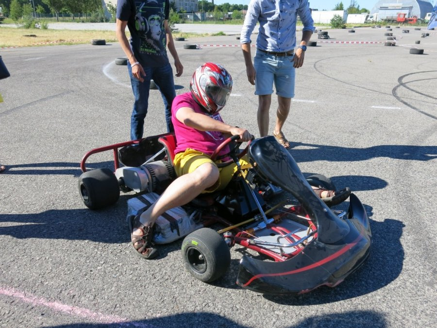

kartingas - išsamiai DELFI.lt
 Spalio 26 d., pirmadienis | Vilnius 12 Kaunas 13 Klaipėda 13 Šiauliai 11 Panevėžys 11 Alytus 12 Nida 12 Raseiniai 11 Utena 11 Mažeikiai 11 Biržai 11 Kėdainiai 12 Kiti miestai Paieška | Pranešti naujieną | LT RU EN | Reklama Kontaktai | Statistika | + Apie Delfi plius Prisijungti Naujausios Skaitomiausios Lietuvoje Sportas Orai Kriminalai Užsienyje Veidai Horoskopai Gyvenimas Mokslas Verslas Daugiau Sveikata Kultūra Auto M360 Politiko akimis Jaunimas Pilietis Nuomonių ringas Multimedija Teisė Medijos Karas Propaganda PT Melo detektorius Demaskuok Ačiū už pamokas Temos | Delfi Video
Spalio 26 d., pirmadienis | Vilnius 12 Kaunas 13 Klaipėda 13 Šiauliai 11 Panevėžys 11 Alytus 12 Nida 12 Raseiniai 11 Utena 11 Mažeikiai 11 Biržai 11 Kėdainiai 12 Kiti miestai Paieška | Pranešti naujieną | LT RU EN | Reklama Kontaktai | Statistika | + Apie Delfi plius Prisijungti Naujausios Skaitomiausios Lietuvoje Sportas Orai Kriminalai Užsienyje Veidai Horoskopai Gyvenimas Mokslas Verslas Daugiau Sveikata Kultūra Auto M360 Politiko akimis Jaunimas Pilietis Nuomonių ringas Multimedija Teisė Medijos Karas Propaganda PT Melo detektorius Demaskuok Ačiū už pamokas Temos | Delfi Video
Naujienos
Naujausios Skaitomiausios Lietuvoje Sportas Kriminalai Užsienyje Veidai GyvenimasVerslas Mokslas Kultūra Sveikata Auto Pilietis Miestai M360 Politiko akimis
Delfi Video
Tiesioginės transliacijos Delfi Diena Delfi Dėmesio centre LaidosNaudinga
Orai Horoskopai Receptai TV Programa Valiutų kursaiDelfi projektai
Multimedija Idėja Lietuvai Kablys Smalsūs EP Atsakingas požiūris Atgal į gyvenimąDelfi kanalai
Agro Būstas Moterys Šeima Kelionės Grynas Stilius Maistas Letena Karjera Bored Panda Sek DelfiMobilusis Delfi
Naujausios žinios Naujienų temos Delfi Temos kartingas
kartingas
Lenktynės savaitgalį Rokui Baciuškai buvo permainingos: trukdė ne tik lietus, bet ir skausmas
Per savaitgalį Rokas Baciuška spėjo sudalyvauti net dviejose lenktynėse. II-as Lietuvos BMW kartingo čempionato etapas vyko penktadienį ir...
Kartingo čempionatas parodė naujas tendencijas: to nebuvo nuo nepriklausomybės atgavimo laikų
Praėjusį savaitgalį startavęs „ BMW Lietuvos kartingo čempionatas “ iliustruoja jau keletą metų stebėtas tendencijas – ši sporto šaka...
Lietuvos čempionas Evaldas Dzialtuvas: nuo kartingo iki žiedinių lenktynių 275
Lietuvos kartingo čempionas Evaldas Dzialtuvas šį COVID-19 pandemijos pakoreguotą sporto sezoną varžysis dvejose disciplinose – šalies kartingo...
Sostinėje apdovanoti „BMW Lietuvos kartingo čempionato“ nugalėtojai (1)
Gruodžio 13-ą dieną, Vilniuje vyko šių metų „ BMW Lietuvos kartingo čempionato“ apdovanojimų ceremonija bei sezono uždarymo šventė. Jos metu...
Siūlo aktyvią pramogą senoliams – savo jėgas išbandyti kartingų trasoje (4)
Spalis – garbingo amžiaus žmonių mėnuo. Šia proga jiems organizuojami renginiai, jie kviečiami vaišintis kavinėse, rengiami įvairūs...
Lietuvos mėgėjų kartingo akademijos sportininkai sezoną užbaigs Italijoje
Trečią kartą kartingo lenktynės persikels į Kauno gatves (1)
Plytinės kartodrome atgimė legendinės kartingo lenktynės „GO-1“ 132
1006 kilometrų lenktynėse – kartingo meistrų būrys
Rokas Baciuška ralio krosą keičia į žiedines lenktynes – startuos 1006 km lenktynėse
Bėgimo į dangoraižį dalyviams – auksinis olimpinės čempionės patarimas (1)
Dėl kartingo lenktynių savaitgalį Kaune bus ribojamas eismas (4)
Buvusį sostinės taksi parką pavertė kartingo karalyste
„Lenktynių linija“ lydė asfaltą kartingo čempionate Aukštadvaryje 143
Kartingo specialistai: tai saugaus vairavimo kelyje pagrindas
Mažas kartingas – didelės pastangos: kaip Lietuvoje auga čempionai
Šeštadienį kartingo lenktynininkai rinksis į Smalininkus
Pradedančiojo lenktynininko ABC. Kiek kainuoja startas? (5)
Kartingo lenktynininkai Anykščiuose kėlė sniego pūgą
Gustas Grinbergas: nenoriu būti panašus į kažką, noriu būti geriausias (3)
Kartingo lenktynininkams žiemos žvarba netrukdo
Lietuvos kartingo sporte – nauja saugumo kartelė
Žiemos sezoną kartingo meistrai pradės sostinėje
Dvidešimt metų kartais važinėjantis V. Adomaitis: noras – pirmas žingsnis į realius rezultatus
R. Baciuška: dalyvauti ir parodyti puikų rezultatą – dvigubas laimėjimas 270
G. Grinbergas kuria savo kartingo komandą
G. Grinbergas – geriausių pasaulio „Rok Junior“ lenktynininkų septintuke (1)
IT+: fizika ir rizika „Tyrėjų naktyje“
Kaune – neregėtos sportinių kartų lenktynės miesto gatvėse (7) 221
Kartingo kronikos: ištakos ir realijos
1 2 3 4 5 | Populiariausi straipsniai ir video Sekite DELFI REKLAMA KONTAKTAI PRIVATUMAS KARJERA en.delfi.lt ru.delfi.lt pl.delfi.lt delfi.ee rus.delfi.ee delfi.lv ru.delfi.lv UAB DELFI Gynėjų g. 16, 01109 Vilnius +37052045400 info@delfi.lt © 1999-2020 DELFI. Visos teisės saugomos .